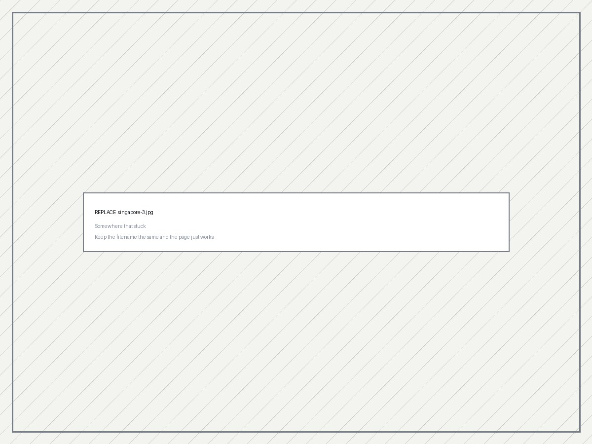

Study Abroad
UF in Singapore
A term of coursework, an engineering internship, and a lot of time spent working out how a city this dense actually holds together.
01
The program
Two or three paragraphs of overview. What the program was, how long, where you lived, what the structure looked like (class + internship), and what your first week felt like versus your last. This is scene-setting — the reflection questions below carry the analysis.
Write it here.

02
Cultural Storytelling project
Required: your Module 4 submission goes here, in full.
Paste your Cultural Storytelling project below. If it was a video, embed it with the iframe already set up underneath. If it was a photo essay, use the gallery pattern from section 01. If it was written, paste the text and add the images that went with it.https://www.youtube.com/embed/VIDEO_ID) into the src of the iframe. If it wasn't a video, delete this whole figure.
If the project was written or photo-based, paste it here instead and delete the iframe above.
03
Reflection
What did I learn about local culture — through the planned activities and excursions, and on my own?
Anchor this in specific moments rather than generalisations. One planned excursion and one thing you found by yourself works well. Useful angles: what you noticed about how Singaporeans handle disagreement or hierarchy; the multilingual reality of Singlish, Mandarin, Malay and Tamil in one conversation; what hawker centres told you about how the city is organised; how public housing policy shapes who lives next to whom. Name the thing you got wrong at first and what corrected it.Write it here.
What did I find challenging about studying and working abroad?
Be honest and specific — vague difficulty reads as filler. Candidates: communication norms at Fuzzy AI that differed from what you expected; being the most junior person on a team in a country you'd just arrived in; heat and humidity affecting your working rhythm; cost of living; the gap between coursework code and production code; homesickness or time-zone isolation from people back home. Pick two and say what you actually did about them.Write it here.
What lessons did I take from the experience?
The strongest version of this answer names something you believed before the term that you don't believe now. Draw from the internship, from exploring, or both. Keep it to two or three lessons with real evidence behind each — a padded list of five is weaker than two you can prove.Write it here.
How will I use this intercultural experience back at UF and in my career?
Two halves. At UF: group projects, student orgs, international classmates, courses you'll pick differently. Professionally: distributed teams, working with colleagues across time zones, building software for users who aren't like you, and any interest in working abroad again. Make it concrete — a named plan beats a stated intention.Write it here.